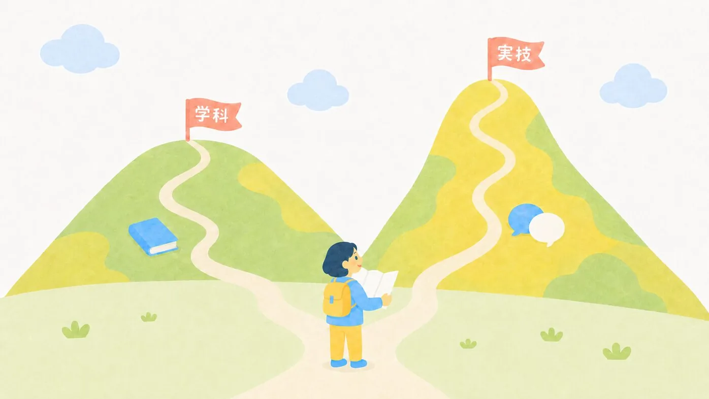
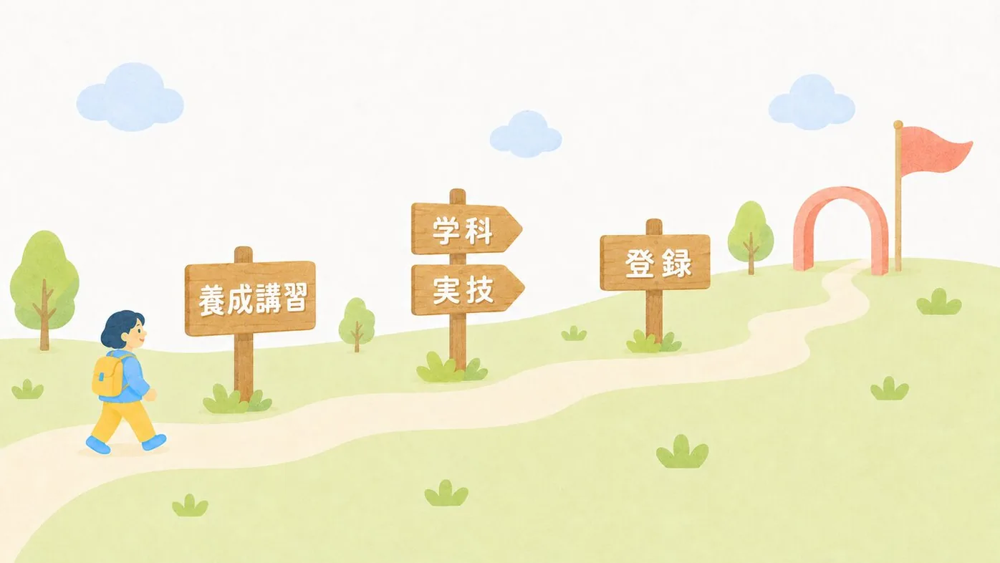
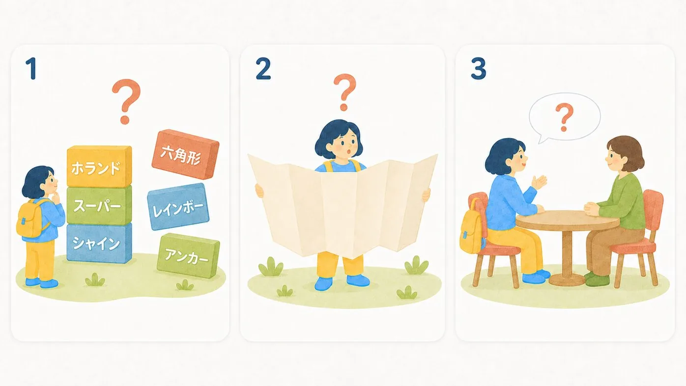

キャリコン学びピクニック
キャリコン学びピクニックキャリアコンサルタント試験の難易度と合格率【最新・推移グラフつき】
合格率の
更新日: 2026年9月29日
結論:キャリアコンサルタント試験の合格率は、回によって大きく動く
キャリアコンサルタント試験の

キャリアコンサルタント試験の合格率の推移 — 学科は第32回で急に下がった

| 回 | 学科 | 実技 |
|---|---|---|
| 第24回 | 52.6% | 65.4% |
| 第25回 | 63.7% | 66.5% |
| 第26回 | 65.5% | 62.2% |
| 第27回 | 59.7% | 67.4% |
| 第28回 | 68.4% | 67.7% |
| 第29回 | 72.7% | 64.3% |
| 第30回 | 77.6% | 64.1% |
| 第31回 | 80.6% | 64.6% |
| 第32回 | 54.8% | 61.7% |
この
1つめ。
2つめ。
モヤン学科は
サニー先生ところが
モヤン合格率って、
試験のしくみを30秒で

- 受験資格
— 養成講習の 修了、 または 実務経験(3年以上)など - 学科
— 四肢択一50問・100点満点で 70点以上 - 実技
— 論述+面接(ロールプレイ)・150点満点で 90点以上 (論述に 足切り あり) - 学科・実技は
別々に 受けられ、 片方だけの 合格は 次回以降に 持ち越せる - 合格後に
登録 して、 はじめて 「キャリアコンサルタント」と 名乗れる (名称独占資格)
実施団体が2つある(協議会とJCDA)
試験は
| 協議会 | JCDA | |
|---|---|---|
| 学科 | 54.6% | 55.6% |
| 実技 | 60.3% | 66.5% |
学科は
キャリアコンサルタント試験の難易度が高い3つの理由

① カタカナ理論家の
② 範囲の
③ 実技は
モヤン知識を
サニー先生実技は
モヤン学科は
この難しさへの、このサイトなりの答え
- カタカナの
壁には → 理論家図鑑(66人) と ことば図鑑。 覚え方と 「間 違えやすい ポイント」 つき - 範囲の
広さには → 頻出用語だけ先に やる と 毎日 1問1答(3分) - 実技には
→ 論述ボードゲーム と ことばの キャッチボール(傾聴練習) - 学科の
出題傾向を 知りたいなら → 問題番号で わかる 出題傾向と 勉強法
他の資格と難易度を比べると？
合格率だけ
モヤン社会保険労務士より
サニー先生受験者の
モヤンお昼寝は
まとめ
合格率は
情報確認日: 2026-10-16 ／ 出典: キャリアコンサルティング協議会・日本キャリア開発協会の